M1 / B1: how slim can the connection to the chair be?
Locked: M1 stem, B1 receiver, with the relief window. This page asks only how far the receiver should stick out behind the chair and how far down the back it should run. All four versions are drawn at H100.
Where the bulk comes from (and what was exaggerated)
In the version you saw (R0), the receiver stuck out 22 mm behind the chair's back face and ran down to z 269. Here is where that comes from:
- +11 mm: carbon rod positions (fixed). The rods sit at y 146.8, set by the locked pad's rod sockets, and that is already 3 mm behind the chair's back face. Add the rod radius (4) and a plastic wall and you are about 11 mm out before the receiver even starts.
- +8 mm: receiver back wall (needed, but 6 mm is enough). In a backward knock the top of the plug presses on this wall, at about 2.5 MPa at H100. 6 mm carries that.
- +3 mm: the socket sat further back than it had to. Its front wall was 8.5 mm, but that wall is backed by the whole backrest plate, so 4.5 mm is fine. Moving the socket 4 mm forward saves 4 mm at the back.
- Running down to z 269: pure styling (exaggerated). Below the socket floor (z 345) the receiver carries nothing. It only needs a sloped bottom so top_back still prints upright without supports. Ending it at z 303 is enough.
- Width ±42: partly exaggerated. The plug is ±28, and the side walls take the side bashes. ±36–38 mm is enough.
Because the chair only touches the car's rear wall up to about 2/3 of its height, everything here (z 303 and up) is above where it touches.
Four versions, cut through the middle
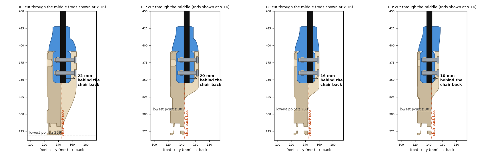
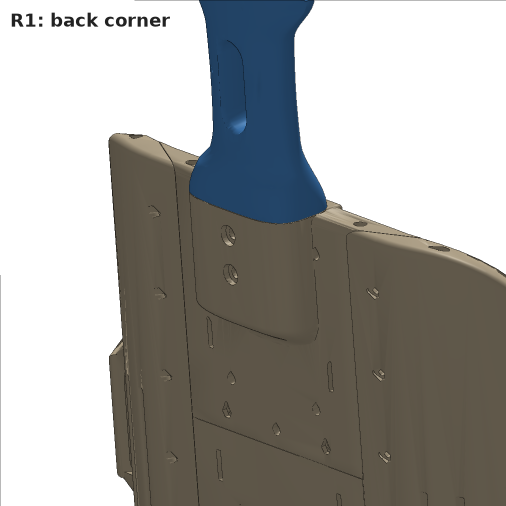
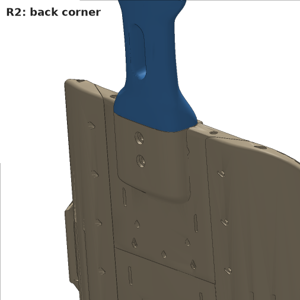
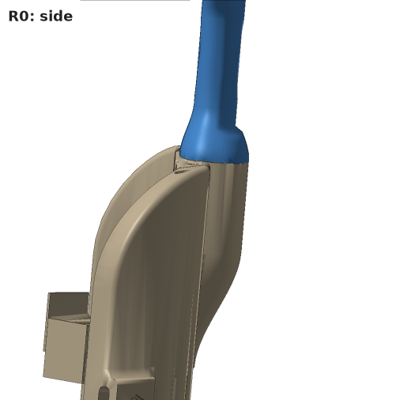
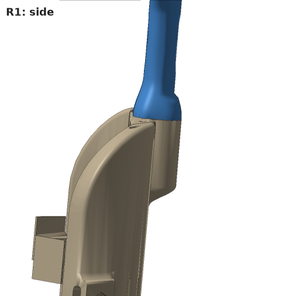
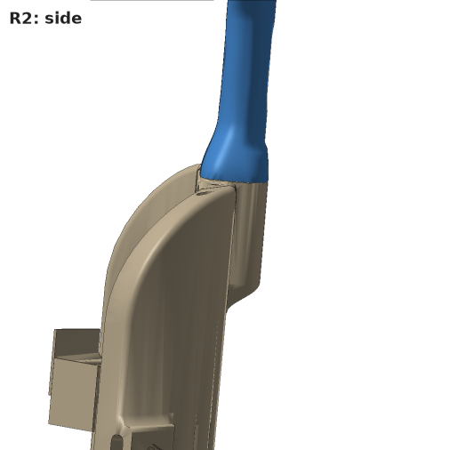
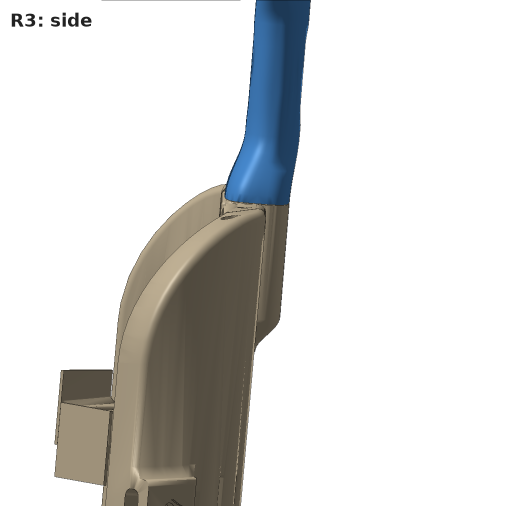
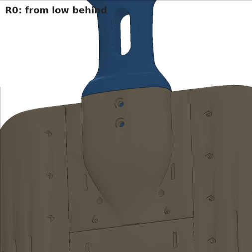
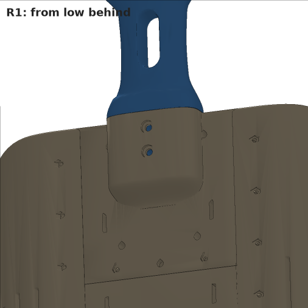
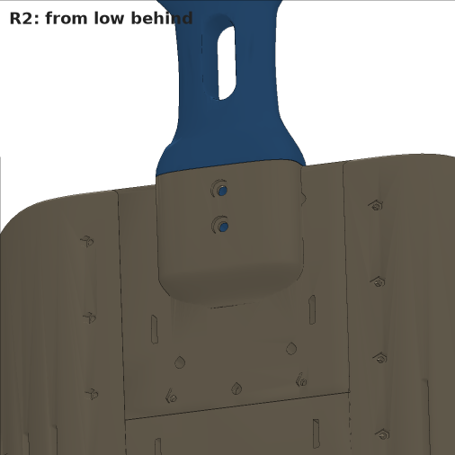
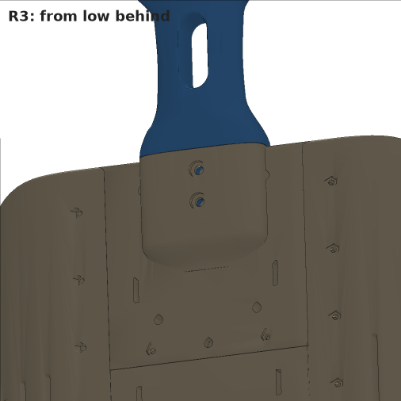
Numbers (H100, 300 N knock)
| R0 today | R1 trim | R2 socket forward | R3 rods forward | |
|---|---|---|---|---|
| Behind the chair back | 22 mm | 20 mm | 16 mm | 10 mm |
| Runs down to | z 269 | z 303 | z 303 | z 303 |
| Width | ±42 | ±36 | ±38 | ±38 |
| New material on the chair | 106 cm³ | 44 cm³ | 43 cm³ | 33 cm³ |
| Plug safety factor (in the socket) | 6.0 | 6.0 | 5.7 | 4.7 |
| Mast's weakest spot: the stem at the window (H100 / H50) | 4.0 / 6.4 | 4.0 / 6.4 | 3.9 / 5.7 | 3.9 / 5.6 |
| Pad flex, 150 N push | 1.45 mm | 1.47 mm | 1.49 mm | 1.56 mm |
| Carbon backup | yes | yes | yes | yes |
| Changes to locked parts | none | none | none | moves the pad's rod sockets 6 mm forward |
For all four: every wall around the socket is at least 3 mm thick, the mast has no clashes, it lifts out cleanly, the rods are fully enclosed, and nothing hangs in the air underneath.
My recommendation: R2
It sticks out 6 mm less, stops 34 mm higher up the back, and is narrower, with no real loss of strength and no change to anything already locked. R3 gets close to flush (10 mm), but only by moving the rod sockets in the locked pad and thinning the plug. I'd only do that if the last 6 mm matter for fitting the car.